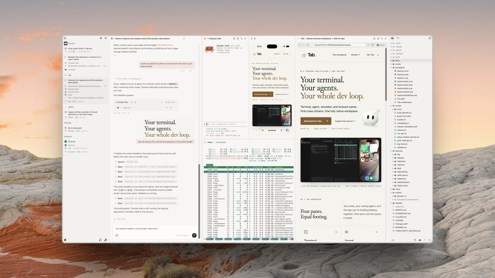

01
Terminal
Your shell, at home. Run commands, watch logs, and keep development servers going with the Ghostty terminal engine.
Split. Resize. Keep running.Terminal, agent, simulator, and browser panes.
First-class citizens. One fully native workspace.
macOS 14+ · Apple silicon · Free & open source

01 / The workspace
Your shell, your coding agent, and the app you’re building belong together. Give each one the space it needs.
Your shell, at home. Run commands, watch logs, and keep development servers going with the Ghostty terminal engine.
Split. Resize. Keep running.Work with Claude Code or Codex in a native conversation pane. Keep the tools to inspect and test their changes right beside them.
From conversation to running code.See your mobile app where you’re working. Interact with iOS simulators and Android emulators in their own panes.
Build it. Run it. Touch it.Open your local app, a preview, or the docs. Keep the page in view while you change the code that powers it.
Your feedback loop, in the layout.Mac, through and through.
Written in Swift. Built with AppKit. Native keyboard shortcuts, flexible split panes, and macOS glass surfaces. A workspace made for the Mac you’re using.
02 / A little more room to work
Give each project or Git worktree its own sidebar tab. Arrange panes inside it. Keep parallel tasks separate, with files and Git diffs close at hand.
Use your installed and authenticated Claude Code or Codex CLI in native agent panes. Prefer another CLI agent? Run it in a terminal pane.
Connect to another Mac over SSH. Work with its projects, terminals, and simulators. Browser pages travel through the server’s tunnels, so localhost stays with the workspace.
03 / Its own server. Included.
Tab’s background server owns your terminal sessions and workspace state. Quit the desktop app, come back later, and reconnect to your work.
The Mac running your workspace needs to stay awake. Closing a terminal pane ends that session.
Terminal sessions · Workspace state
A few useful details
An agent development environment: a workspace for working with coding agents and the tools around them. Tab combines that with a terminal multiplexer, bringing agents, terminals, simulators, and browsers into one native Mac app.
A Mac with Apple silicon running macOS 14 or later. Native agent conversations use an installed, authenticated Claude Code or Codex CLI. iOS simulators need Xcode and a simulator runtime; Android emulators need the Android SDK and an emulator.
No. Tab is free and open source. You use your own agent CLI and provider account; any provider fees are separate.
The native desktop app, the tab command-line tool, and the tabd background server, together in one Mac app bundle.
Yes. Tab is MIT licensed. The README has build instructions, and the full source is on GitHub.
Make yourself a workspace.
macOS 14+ · Apple silicon · Free & open source